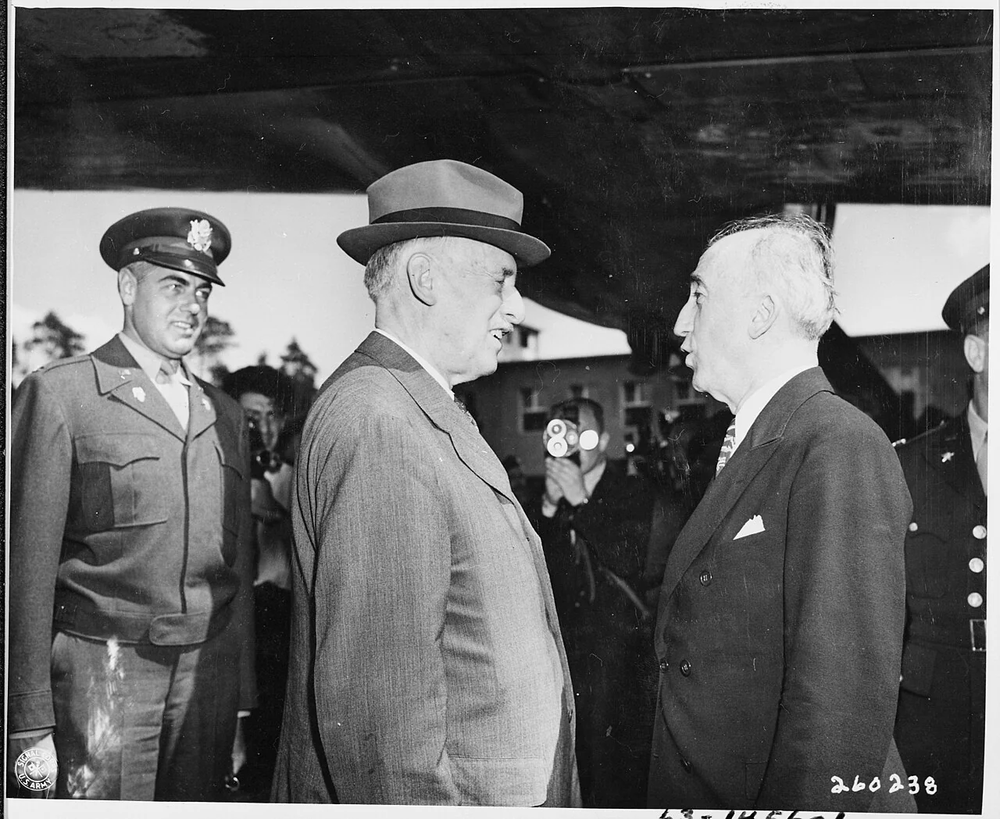
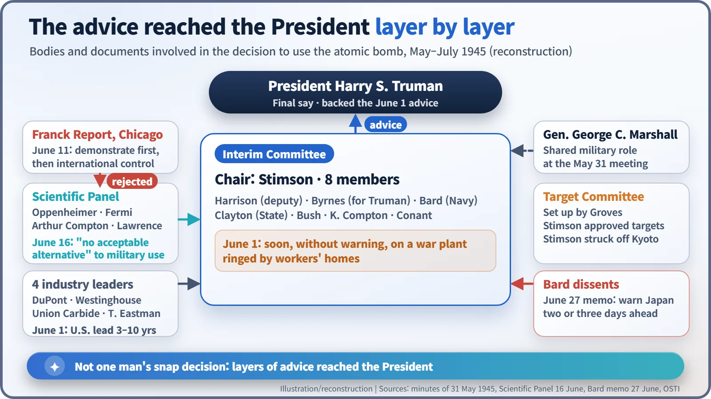
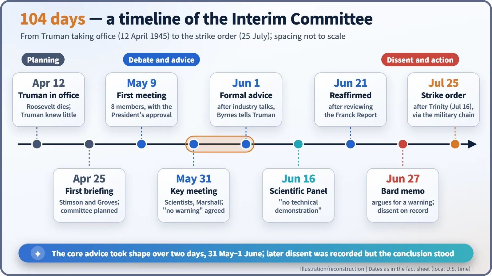

Nuclear History · 116
The Lunch Break Missing from the Minutes — The Interim Committee and the Decision to Use the Atomic Bomb (1945)
Eight officials and four scientists shaped the advice on how to use the bomb, while the debate over a harmless demonstration stayed off the record.
In May 1945 Secretary of War Henry Stimson set up the Interim Committee to advise President Truman on the atomic bomb. At its meetings on 31 May and 1 June it advised using the bomb against Japan as soon as possible, without warning, on a war plant surrounded by workers' homes. The idea of a harmless demonstration was turned down, but that discussion never made it into the official minutes.
A document with a lieutenant's signature
At the end of a typed, multi-page document there is a single signature: "R. Gordon Arneson, 2nd Lieutenant, A.U.S., Secretary." The title reads "Notes of the Interim Committee Meeting, Thursday, 31 May 1945", and the first page is stamped Top Secret. Around the table that day sat a Secretary of War, university presidents, Nobel laureates and the Army Chief of Staff. The advice on how to use the atomic bomb took shape in that room. Yet read the minutes to the last line and one story never appears. [1]
A President who had barely been told
On 12 April 1945 President Franklin D. Roosevelt died and Vice President Harry S. Truman took over. Truman had never been properly briefed on the Manhattan Project. On 25 April, Secretary of War Henry L. Stimson (1867–1950) and General Leslie Groves gave him his first full briefing. Stimson's memorandum opened bluntly: "Within four months, we shall, in all probability, have completed the most terrible weapon ever known in human history." [6]
The same memo said that steps were under way to set up "a select committee of particular qualifications" to advise the executive and Congress. With the President's approval, that body held its first meeting on 9 May: the Interim Committee. The minutes explain the name. Once the project became widely known, a permanent body would have to be created by Congress or by treaty; until then, this committee would fill the gap. Its job was to recommend wartime controls, public statements, legislation and postwar organisation. [1] [4]
Stimson chaired it, with his special assistant George L. Harrison as deputy. James F. Byrnes (1882–1972), soon to be Secretary of State, sat as the President's personal representative. Under Secretary of the Navy Ralph A. Bard (1884–1975) and Assistant Secretary of State William L. Clayton joined them, along with the science administrators Vannevar Bush, Karl T. Compton and James B. Conant: eight members in all. A Scientific Panel of four physicists advised them: J. Robert Oppenheimer, Enrico Fermi, Arthur H. Compton and Ernest O. Lawrence.

31 May: from 10 a.m. to 4:15 p.m.
General George C. Marshall and General Groves were invited to the key meeting on 31 May. Stimson opened by saying the project should not be seen simply as a new weapon but as "a new relationship of man to the universe", comparable to the Copernican theory or the laws of gravity. "It must be controlled if possible to make it an assurance of future peace rather than a menace to civilization." [1]
The morning was about postwar research and, above all, the Soviet Union. Oppenheimer estimated that a bomb of the kind then being built would release the energy of 2,000 to 20,000 tons of TNT. Marshall even raised the idea of inviting two prominent Soviet scientists to watch the test. Byrnes objected that if Stalin were told anything, he would ask to be brought into the partnership. The meeting settled on pushing ahead "as fast as possible in production and research" while trying to improve political relations with Moscow.
After lunch the subject turned to Japan. According to the minutes, Stimson stated a conclusion "on which there was general agreement": that "we could not give the Japanese any warning; that we could not concentrate on a civilian area; but that we should seek to make a profound psychological impression on as many of the inhabitants as possible." At Conant's suggestion, the most desirable target was described as "a vital war plant employing a large number of workers and closely surrounded by workers' houses." [1]
The conversation that isn't there
So what is missing from the minutes? The proposal to explode the bomb first where no one lived, as a demonstration. The U.S. Department of Energy's official history of the Manhattan Project says Lawrence raised the idea that day and that it was turned down: the bomb might be a dud, Japan might move American prisoners of war into the area, and the shock value would be lost. Yet the full text of Arneson's minutes does not mention this discussion at all. It reportedly came up over lunch and is known from participants' later recollections, such as Arthur Compton's. One of the turning points in the story sits outside the official record. [4]
The next day, 1 June, the committee met four industry leaders, from DuPont, Tennessee Eastman, Westinghouse and Union Carbide. Then, on Byrnes's proposal, it adopted its formal advice: use the bomb against Japan as soon as possible, without prior warning, on a war plant surrounded by workers' homes. Byrnes took the advice straight to Truman, who reportedly agreed. [4] [6]

Dissent went on the record
Not everyone agreed. On 11 June scientists in Chicago produced the Franck Report, urging a demonstration in an uninhabited area followed by a push for international control. On 16 June the Scientific Panel replied: "we can propose no technical demonstration likely to bring an end to the war; we see no acceptable alternative to direct military use." The same paper urged that, before use, not only Britain but also Russia, France and China be told of the work, and admitted that the scientists had "no claim to special competence" in the political, social and military problems involved. On 21 June the committee reaffirmed its advice. [2] [5]
Then one member changed his mind. In a memo dated 27 June, Bard wrote that Japan "should have some preliminary warning for say two or three days in advance of use", citing "the position of the United States as a great humanitarian nation and the fair play attitude of our people". He ended: "The only way to find out is to try it out." The advice did not change. The list of target cities was drawn up by a separate Target Committee set up by Groves, and Stimson struck Kyoto from it. [3] [4]

So when was the decision made?
Historians still disagree about whether the committee ever really debated whether to use the bomb, or only how. In an article published under his name in Harper's Magazine in February 1947, Stimson wrote that the committee had carefully considered alternatives such as a detailed advance warning and a demonstration. The historian Barton J. Bernstein reads the record differently: in his view, Truman and his advisers took the legitimacy of using the bomb for granted, and the "war plant surrounded by workers' homes" formula was an uneasy endorsement of terror bombing. This article does not pick a side. What the documents do show is that the decision built up in layers: the committee's advice, the Scientific Panel's concurrence, the military's choice of targets and the President's approval. [5] [6]
The committee also worked on the President's post-bombing statement and on draft postwar atomic energy legislation. The minutes signed by a second lieutenant are now in the U.S. National Archives, and anyone can read them.